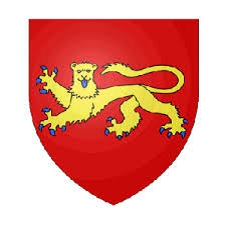

Kung av Wessex. Blev ca 63 år.
omkring 795 Aachen, Tyskland. [1]
858-01-13 Stambridge, England. [1]
Æthelwulf ( gammalengelskt uttal: [ˈæðelwuɫf] ; [2] forngelska för "ädel varg"; [3] död 13 januari 858) var kung av Wessex från 839 till 858. [a] År 825, hans far, kung Egbert , besegrade kung Beornwulf av Mercia , vilket avslutade en lång merciansk dominans över det anglosaxiska England söder om Humber . Egbert skickade Æthelwulf med en armé till Kent, där han utvisade den mercianska underkungen och själv utnämndes till underkung. Efter 830 upprätthöll Egbert goda förbindelser med Mercia, och detta fortsattes av Æthelwulf när han blev kung 839, den första sonen som efterträdde sin far som västsaxisk kung sedan 641.
De vikingar inte var ett stort hot mot Wessex under Æthelwulf regeringstid. År 843 besegrades han i en strid mot vikingarna vid Carhampton i Somerset, men han uppnådde en stor seger i slaget vid Aclea år 851. År 853 gick han med på en framgångsrik Mercian-expedition till Wales för att återställa den traditionella mercianska hegemonin, och i samma år gifte sig hans dotter Æthelswith med kung Burgred av Mercia . År 855 gick Æthelwulf på pilgrimsfärd till Rom. Som förberedelse gav han en "decimering" och skänkte en tiondel av sin personliga egendom till sina undersåtar; han utnämnde sin äldste överlevande son Æthelbald att fungera som kung av Wessex i hans frånvaro, och hans nästa son Æthelberhtatt styra Kent och sydost. Æthelwulf tillbringade ett år i Rom, och på vägen tillbaka gifte han sig med Judith , dotter till den västfrankiske kungen Karl den Skallige .
När Æthelwulf återvände till England vägrade Æthelbald att överlämna den västsaxiska tronen, och Æthelwulf gick med på att dela riket, ta österut och lämna väster i Æthelbalds händer. Vid Æthelwulfs död 858 lämnade han Wessex till Æthelbald och Kent till Æthelberht, men Æthelbalds död ledde bara två år senare till rikets återförening. Under 1900-talet var Æthelwulfs rykte bland historiker dåligt: han sågs som överdrivet from och opraktisk, och hans pilgrimsfärd sågs som ett övergivande av sina plikter. Historiker under 2000-talet ser honom väldigt annorlunda, som en kung som befäste och utökade sin dynastis makt, avlade respekt på kontinenten och hanterade vikingatacker mer effektivt än de flesta av sina samtida. Han anses vara en av de mest framgångsrika västsaxiska kungarna,Alfred den store .
Innehåll
Bakgrund
Södra brittiska öarna 900-talet
Södra Storbritannien i mitten av 800-talet
I början av 800-talet var England nästan helt under anglosaxarnas kontroll, med Mercia och Wessex som de viktigaste sydliga kungadömena. Mercia var dominerande fram till 820-talet, och det utövade överherrskap över East Anglia och Kent , men Wessex kunde behålla sin självständighet från sin starkare granne. Offa , kung av Mercia från 757 till 796, var den dominerande gestalten under andra hälften av 800-talet. Kung Beorhtric av Wessex (786-802), gift Offa dotter i 789. Beorhtric och Offa körde Æthelwulf far Egbert i exil, och tillbringade han flera år i domstol i Charlemagne iFrankrike . Egbert var son till Ealhmund , som en kort tid hade varit kung av Kent 784. Efter Offas död behöll kung Coenwulf av Mercia (796–821) Mercia dominans, men det är osäkert om Beorhtric någonsin accepterade politisk underordning, och när han dog i 802 blev Egbert kung, kanske med stöd av Karl den Store. [6] I tvåhundra år hade tre släktingar kämpat om den västsaxiska tronen, och ingen son hade följt sin far som kung. Egberts bästa påstående var att han var barnbarns sonson till Ingild, bror till kung Ine (688–726), och 802 skulle det ha verkat mycket osannolikt att han skulle upprätta en bestående dynasti. [7]
Nästan ingenting finns nedtecknat från de första tjugo åren av Egberts regeringstid, förutom kampanjer mot kornisherna på 810-talet. [8] Historikern Richard Abels hävdar att tystnaden i den Anglo-Saxon Chronicle förmodligen var avsiktlig, och döljde Egberts utrensning av Beorhtrics magnater och undertryckande av rivaliserande kungliga linjer. [9] Relationerna mellan kungar från Mercia och deras kentiska undersåtar var avlägsna. Kentish ealdormen deltog inte domstolen kung Coenwulf, som grälade med ärkebiskop Wulfred av Canterbury (805-832) över kontrollen av Kentish kloster; Coenwulfs främsta angelägenhet verkar ha varit att få tillgång till Kents rikedom. Hans efterträdare Ceolwulf I (821–23) ochBeornwulf (823–26) återställde förbindelserna med ärkebiskop Wulfred, och Beornwulf utnämnde en underkung av Kent, Baldred . [10]
England hade drabbats av vikingaräder i slutet av 800-talet, men inga attacker finns registrerade mellan 794 och 835, när Isle of Sheppey i Kent härjades. [11] År 836 besegrades Egbert av vikingarna vid Carhampton i Somerset , [8] men 838 vann han över en allians av Cornishmen och Vikings i slaget vid Hingston Down , vilket reducerade Cornwall till status som ett klientrike. [12]
Familj
Æthelwulf var son till Egbert, kung av Wessex från 802 till 839. Hans mors namn är okänt, och han hade inga registrerade syskon. Han är känd för att ha haft två fruar i följd, och så vitt man vet var Osburh , den äldre av de två, mor till alla hans barn. Hon var dotter till Oslac, beskrev av Asser , biograf över deras son Alfred den store , som "kung Æthelwulfs berömda butler", [b] en man som härstammade från juter som hade härskat över Isle of Wight . [14] [15] Æthelwulf hade sex kända barn. Hans äldsta son, Æthelstan, var tillräckligt gammal för att bli utnämnd till kung av Kent 839, så han måste ha fötts i början av 820-talet, och han dog i början av 850-talet. [c] Den andra sonen, Æthelbald , registreras första gången som ett chartervittne år 841, och om han, liksom Alfred, började intyga när han var runt sex, skulle han ha fötts omkring 835; han var kung av Wessex från 858 till 860. Æthelwulfs tredje son, Æthelberht , föddes troligen omkring 839 och var kung från 860 till 865. Den enda dottern, Æthelswith , gifte sig med Burgred, kung av Mercia , 853. [17] Den andra två söner var mycket yngre: Æthelredföddes omkring 848 och var kung från 865 till 871, och Alfred föddes omkring 849 och var kung från 871 till 899. [18] År 856 gifte Æthelwulf sig med Judith , dotter till Karl den skallige , kung av Västfrankien och den blivande helige romerska kejsaren , och hans hustru Ermentrude . Osburh hade förmodligen dött, även om det är möjligt att hon hade blivit avvisad. [d] Det fanns inga barn från Æthelwulfs äktenskap med Judith, och efter hans död gifte hon sig med hans äldsta överlevande son och efterträdare, Æthelbald. [14]
Tidigt liv
Æthelwulf spelades in för första gången 825, när Egbert vann det avgörande slaget vid Ellandun i Wiltshire mot kung Beornwulf av Mercia, vilket avslutade den långa mercianska makten över södra England. Egbert följde upp det genom att skicka Æthelwulf med Eahlstan , biskop av Sherborne , och Wulfheard, Ealdorman av Hampshire , med en stor armé till Kent för att fördriva underkungen Baldred. [e] Æthelwulf härstammade från kungar av Kent, och han var underkung av Kent, och av Surrey , Sussex och Essex , som sedan ingick i underriket, tills han ärvde Wessex tron 839. [23 ]Hans underkonungskap finns nedtecknat i charter, i några av vilka kung Egbert agerade med sin sons tillåtelse, [14] såsom en bevilgning 838 till biskop Beornmod av Rochester, och Æthelwulf själv utfärdade en charter som kung av Kent samma år . [24] Till skillnad från deras mercianska föregångare, som alienerade det kentiska folket genom att styra på avstånd, odlade Æthelwulf och hans far framgångsrikt lokalt stöd genom att regera genom kentiska ealdormen och främja deras intressen. [25] Enligt Abels uppfattning belönade Egbert och Æthelwulf sina vänner och rensade Mercian-supportrar. [26] [f]Historiker har olika åsikter om den nya regimens inställning till den kentiska kyrkan. I Canterbury 828 beviljade Egbert privilegier till biskopsrådet i Rochester , och enligt historikern i anglosaxiska England Simon Keynes , vidtog Egbert och Æthelwulf åtgärder för att säkra stödet från ärkebiskop Wulfred. [28] Emellertid hävdar medeltidsmannen Nicholas Brooks att Wulfreds mercianska ursprung och kopplingar bevisade ett ansvar. Æthelwulf beslagtog ett gods i East Malling från Canterbury-kyrkan på grund av att det endast hade beviljats av Baldred när han var på flykt från de västsaxiska styrkorna; frågan om ärkebiskopmyntningen avbröts i flera år; och det enda godset Wulfred beviljades efter 825 fick han av kung Wiglaf av Mercia . [29]
År 829 erövrade Egbert Mercia, bara för att Wiglaf skulle återfå sitt kungadöme ett år senare. [30] Den lärde DP Kirby ser Wiglafs restaurering 830 som en dramatisk omsvängning för Egbert, vilket troligen följdes av hans förlust av kontrollen över Londons myntverk och det mercianska återhämtningen av Essex och Berkshire, [31] och historikern Heather Edwards säger att hans "enorma erövring inte kunde upprätthållas". [8] Men enligt Keynes:
Det är intressant ... att både Egbert och hans son Æthelwulf verkar ha respekterat Kents separata identitet och dess associerade provinser, som om det inte verkar ha funnits någon plan i detta skede att absorbera sydost till ett utvidgat kungarike som sträcker sig över hela landet. hela södra England. Det tycks inte heller ha varit Egberts och hans efterträdares avsikt att upprätthålla överhöghet av något slag över kungariket Mercia ... Det är fullt möjligt att Egbert hade avstått från Mercia av egen vilja; och det finns inget som tyder på att någon kvarvarande antagonism påverkade relationerna mellan härskarna i Wessex och Mercia därefter. [32]
År 838 höll kung Egbert en sammankomst i Kingston i Surrey, där Æthelwulf kan ha blivit invigd till kung av ärkebiskopen. Egbert återställde East Malling-godset till Wulfreds efterträdare som ärkebiskop av Canterbury, Ceolnoth , i utbyte mot ett löfte om "fast och obruten vänskap" för sig själv och Æthelwulf och deras arvingar, och samma villkor specificeras i ett anslag till Winchesters se. . [g] Egbert säkrade därmed stöd åt Æthelwulf, som blev den första sonen att efterträda sin far som västsaxisk kung sedan 641. [34]Vid samma möte valde kentska kloster Æthelwulf till sin herre, och han åtog sig att efter hans död skulle de ha frihet att välja sina huvuden. Wulfred hade ägnat sitt ärkebiskopsämbete åt att slåss mot den sekulära makten över kentska kloster, men Ceolnoth överlämnade nu effektiv kontroll till Æthelwulf, vars erbjudande om frihet från kontroll efter hans död sannolikt inte skulle hedras av hans efterträdare. Kentiska kyrkliga och lekmän sökte nu skydd mot vikingatacker mot västsachsiska snarare än den mercianska kungamakten. [35]
Egberts erövringar gav honom rikedomar som var mycket större än hans föregångare hade åtnjutit, och gjorde det möjligt för honom att köpa det stöd som säkrade den västsaxiska tronen för hans ättlingar. [36] Stabiliteten som följde av Egberts och Æthelwulfs dynastiska arv ledde till en expansion av kommersiella och agrariska resurser och till en expansion av kungliga inkomster. [37] De västsaxiska kungarnas rikedom ökade också genom överenskommelsen 838–39 med ärkebiskop Ceolnoth om att de tidigare oberoende västsachsiska ministrarna skulle acceptera kungen som sin sekulära herre i utbyte mot hans skydd. [38] Det fanns dock ingen säkerhet om att Wessex hegemoni skulle visa sig vara mer permanent än Mercias. [39]
King of Wessex
1200-talsskildring av Æthelwulf
Skildring av Æthelwulf i det sena 1200-talets Genealogical Chronicle of the English Kings
När Æthelwulf efterträdde tronen i Wessex 839, hade hans erfarenhet som underkung av Kent gett honom värdefull träning i kungadömet, och han gjorde i sin tur sina egna söner till underkungar. [40] Enligt Anglo-Saxon Chronicle , vid sin tillträde "gav han till sin son Æthelstan kungariket för folket i Kent, och kungariket för östsaxarna [Essex] och folket i Surrey och sydsaxarna. [Sussex]". Äthelwulf gav dock inte Æthelstan samma makt som hans far hade gett honom, och även om Æthelstan intygade sin fars stadgar [h]som kung verkar han inte ha fått makten att utfärda sina egna stadgar. Æthelwulf utövade auktoritet i sydost och gjorde regelbundna besök där. Han styrde Wessex och Kent som separata sfärer, och sammankomster i varje kungarike deltog endast av adeln i det landet. Historikern Janet Nelson säger att "Æthelwulf drev ett familjeföretag i karolingisk stil av pluralriken, som hölls samman av sin egen auktoritet som fader-kung, och med samtycke från distinkta eliter." Han upprätthöll sin fars politik att styra Kent genom ealdormen som utsetts från den lokala adeln och främjade deras intressen, men gav mindre stöd till kyrkan. [41] År 843 beviljade Æthelwulf tio hudar på Little Charttill Æthelmod, bror till den ledande kentländska ealdorman Ealhere, och Æthelmod efterträdde posten vid sin brors död 853. [42] År 844 beviljade Æthelwulf mark i Horton i Kent till Ealdorman Eadred, med tillstånd att överföra delar av det till lokala markägare; i en kultur av ömsesidighet skapade detta ett nätverk av ömsesidiga vänskaper och förpliktelser mellan förmånstagarna och kungen. [43] Ärkebiskopar av Canterbury var fast i den västsaxiska kungens sfär. Hans ealdormen åtnjöt hög status och placerades ibland högre än kungens söner i förteckningar över vittnen till stadgar. [44] Hans regeringstid är den första för vilken det finns bevis för kungliga präster, [45] och Malmesbury Abbeybetraktade honom som en viktig välgörare, som sägs ha varit donator av en helgedom för relikerna av Saint Aldhelm . [46]
Efter 830 hade Egbert följt en politik att upprätthålla goda förbindelser med Mercia, och detta fortsatte Æthelwulf när han blev kung. London var traditionellt en merciansk stad, men på 830-talet var den under västsaxisk kontroll; strax efter Æthelwulfs anslutning återgick den till merciansk kontroll. [47] Kung Wiglaf av Mercia dog 839 och hans efterträdare, Berhtwulf , återupplivade det mercianska myntverket i London; de två kungadömena tycks ha slagit en gemensam fråga i mitten av 840-talet, vilket möjligen tyder på västsaxisk hjälp med att återuppliva det mercianska myntet, och visar de vänskapliga förbindelserna mellan de två makterna. Berkshire var fortfarande Mercian år 844, men år 849 var det en del av Wessex, eftersom Alfred föddes det året på den västsaxiska kungagården i Wantage , sedan i Berkshire.[48] [i] Den lokala mercianske ealdorman, även kallad Æthelwulf , behöll dock sin position under de västsaxiska kungarna. [50] Berhtwulf dog 852 och samarbetet med Wessex fortsatte under Burgred, hans efterträdare som kung av Mercia, som gifte sig med Æthelwulfs dotter Æthelswith 853. Samma år hjälpte Æthelwulf Burgred i en framgångsrik attack mot Wales för att återställa den traditionella mercianska hegemonin över den walesiska. [51]
I 800-talets Mercia och Kent producerades kungliga charter av religiösa hus, var och en med sin egen stil, men i Wessex fanns det en enda kunglig diplomatisk tradition, förmodligen av en enda byrå som agerade för kungen. Detta kan ha sitt ursprung i Egberts regeringstid, och det blir tydligt på 840-talet, när Æthelwulf hade en frankisk sekreterare som hette Felix. [52] Det fanns starka kontakter mellan de västsaxiska och karolingiska hoven. De Annals of St Bertin tog särskilt intresse i Viking attacker mot Storbritannien och 852 Lupus , abboten i Ferrièresoch en skyddsling till Karl den Skallige, skrev till Æthelwulf och gratulerade honom till hans seger över vikingarna och bad om en blygåva för att täcka hans kyrktak. Lupus skrev också till sin "mest älskade vän" Felix och bad honom sköta transporten av blyet. [53] Till skillnad från Canterbury och sydost såg Wessex inte en kraftig nedgång i standarden för latin i charter i mitten av 800-talet, och detta kan delvis ha varit på grund av Felix och hans kontinentala kontakter. [54] Lupus trodde att Felix hade stort inflytande över kungen. [14] Charter utfärdades huvudsakligen från kungliga gods i grevskap som var hjärtat av det forntida Wessex, nämligen Hampshire, Somerset, Wiltshire och Dorset , med några i Kent.[55]
En forntida uppdelning mellan östra och västra Wessex fortsatte att vara viktig på 900-talet; gränsen var Selwood Forest på gränsen till Somerset, Dorset och Wiltshire. De två biskopsråden i Wessex var Sherborne i väster och Winchester i öster. Æthelwulfs familjeförbindelser verkar ha varit väster om Selwood, men hans beskydd koncentrerades längre österut, särskilt till Winchester, där hans far begravdes, och där han utsåg Swithun att efterträda Helmstan som biskop 852–853. Men han beviljade mark i Somerset till sin ledande ealdorman, Eanwulf, och den 26 december 846 beviljade han en stor egendom till sig själv i South Hams i västra Devon. Han ändrade det alltså frånkunglig demesne , som han var skyldig att lämna över till sin efterträdare som kung, till bokmark , som kunde överlåtas som ägaren behagade, så att han kunde göra markanslag till anhängare för att förbättra säkerheten i en gränszon. [56]
Vikinghot
Vikingaräder ökade i början av 840-talet på båda sidor om Engelska kanalen , och 843 besegrades Æthelwulf av kompaniet med 35 danska fartyg vid Carhampton i Somerset . År 850 vann underkungen Æthelstan och Ealdorman Ealhhere av Kent en sjöseger över en stor vikingaflotta utanför Sandwich i Kent, erövrade nio fartyg och körde iväg resten. Æthelwulf beviljade Ealhhere en stor egendom i Kent, men Æthelstan hörs inte om igen, och dog troligen kort därefter. Året därpå Anglo-Saxon Chronicleregistrerar fem olika attacker mot södra England. En dansk flotta på 350 vikingaskepp tog London och Canterbury, och när kung Berhtwulf av Mercia gick till deras hjälp besegrades han. Vikingarna drog sedan vidare till Surrey, där de besegrades av Æthelwulf och hans son Æthelbald i slaget vid Aclea . Enligt Anglo-Saxon Chronicle gjorde de västsaxiska avgifterna "det största slakt av en hedning som vi har hört berätta om fram till våra dagar". Den Chronicle rapporterade ofta segrar under Æthelwulf regeringstid vann med avgifter under ledning av ealdormen, till skillnad från 870S när kungliga kommandot betonas, vilket återspeglar en mer samförstånds ledarstil i den tidigare perioden. [57]
År 850 övervintrade en dansk armé på Thanet , och år 853 dödades ealdormen Ealhhere av Kent och Huda av Surrey i en strid mot vikingarna, också på Thanet. År 855 stannade danska vikingar över vintern på Sheppey, innan de fortsatte med att plundra östra England. [58] Men under Æthelwulfs regeringstid var vikingattacker begränsade och utgjorde inget större hot. [59]
Mynt
Mynt av kung Æthelwulf
Mynt av kung Æthelwulf: "EĐELVVLF REX", penningman Manna, Canterbury [60]
Den silver öre var nästan det enda mynt som används i mitten och senare anglosaxiska England. Æthelwulfs mynt kom från ett huvudmyntverk i Canterbury och ett sekundärt i Rochester; båda hade använts av Egbert för sitt eget mynt efter att han fått kontroll över Kent. Under Æthelwulfs regeringstid fanns det fyra huvudfaser av myntverket som kunde särskiljas vid båda myntverken, även om de inte är exakt parallella och det är osäkert när övergångarna ägde rum. Det första numret på Canterbury bar en design som kallas Saxoniorum, som hade använts av Egbert för en av hans egna frågor. Detta ersattes av en porträttdesign omkring 843, som kan delas upp ytterligare; de tidigaste mynten har råare design än de senare. Vid Rochester myntverket var sekvensen omvänd, med en initial porträttdesign som ersattes, också omkring 843, av en icke-porträttdesign som bär ett kors-och-kilarmönster på framsidan . [14] [61]
Omkring 848 bytte båda myntverken till en gemensam design känd som Dor¯b¯/Cant – tecknen "Dor¯b¯" på framsidan av dessa mynt indikerar antingen Dorobernia (Canterbury) eller Dorobrevia (Rochester) och "Cant", med hänvisning till Kent, dök upp på baksidan. Det är möjligt att Canterbury-myntverket fortsatte att producera porträttmynt samtidigt. Canterbury-frågan verkar ha avslutats 850–851 av vikingaräder, även om det är möjligt att Rochester förskonades, och frågan kan ha fortsatt där. Det sista numret, återigen vid båda myntverken, introducerades omkring 852; den har ett inskrivet kors på baksidan och ett porträtt på framsidan. Æthelwulfs mynt blev förfalleti slutet av hans regeringstid, och även om problemet blev värre efter hans död, är det möjligt att förnedringen föranledde förändringar i mynttyp från så tidigt som 850. [62]
Æthelwulfs första Rochester-mynt kan ha börjat när han fortfarande var underkung av Kent, under Egbert. En förråd av mynt som deponerades i början av Æthelwulfs regeringstid omkring 840, som hittades i Middle Temple i London, innehöll 22 mynt från Rochester och två från Canterbury av det första numret av varje myntverk. Vissa numismatiker hävdar att den höga andelen Rochester-mynt betyder att frågan måste ha börjat före Egberts död, men en alternativ förklaring är att den som hamstrade mynten helt enkelt råkade ha tillgång till fler Rochester-mynt. Inga mynt gavs ut av Æthelwulfs söner under hans regeringstid. [63]
Ceolnoth, ärkebiskop av Canterbury under Æthelwulfs regeringstid, präglade också sina egna mynt i Canterbury: det fanns tre olika porträttdesigner, som ansågs vara samtida med var och en av de tre första av Æthelwulfs Canterbury-nummer. Dessa följdes av en inskriven korsdesign som var enhetlig med Æthelwulfs slutliga mynt. I Rochester producerade biskop Beornmod bara ett nummer, en kors-och-kilar-design som var samtida med Æthelwulfs Saxoniorum- nummer. [64]
Enligt numismatikerna Philip Grierson och Mark Blackburn påverkades myntverken i Wessex, Mercia och East Anglia inte särskilt mycket av förändringar i politisk kontroll: "den anmärkningsvärda kontinuiteten hos penningmännen som kan ses vid var och en av dessa myntverk antyder att den faktiska myntorganisationen var i stort sett oberoende av den kungliga administrationen och grundades i de stabila handelssamhällena i varje stad". [65]
Decimation Charters
Konung Æthelwulfs stadga
Charter S 316 daterad 855, där Æthelwulf beviljade mark vid Ulaham i Kent till sin minister Ealdhere. [66]
Den tidiga 1900-talshistorikern WH Stevenson observerade att: "Få saker i vår tidiga historia har lett till så mycket diskussion" som Æthelwulfs Decimation Charters; [67] hundra år senare beskrev charterexperten Susan Kelly dem som "en av de mest kontroversiella grupperna av anglosaxiska diplom". [68] Både Asser och Anglo-Saxon Chronicle säger att Æthelwulf gav en decimering, [j] 855, strax innan han åkte på pilgrimsfärd till Rom. Enligt Chronicle"Kung Æthelwulf förmedlade genom stadga den tionde delen av sitt land genom hela sitt rike till Guds pris och till sin egen eviga frälsning". Asser säger dock att "Æthelwulf, den högaktade kungen, befriade tiondedelen av hela sitt rike från kunglig tjänst och tribut, och som ett evigt arv överlämnade han den på Kristi kors till den treenige Guden, för sin återlösning. själen och hans föregångares." [70] Enligt Keynes kan Assers version bara vara en "lös översättning" av Krönikan , och hans antydan att Æthelwulf släppte en tiondel av all mark från sekulära bördor var förmodligen inte avsedd. Allt land kunde betraktas som kungens land, så Krönikanhänvisningen till "hans jord" syftar inte nödvändigtvis på kunglig egendom, och eftersom bokföringen av mark – att förmedla den genom stadga – alltid betraktades som en from handling, betyder Assers uttalande att han överlåtit det till Gud inte nödvändigtvis att stadgarna var för kyrkan. [71]
Decimation Charters är indelade av Susan Kelly i fyra grupper:
Två daterade i Winchester den 5 november 844. I en charter i Malmesbury-arkivet hänvisar Æthelwulf i proemet till det farliga tillståndet i sitt rike som ett resultat av övergreppen på hedningar och barbarer. För hans själs skull och i gengäld för mässor för kungen och ealdormen varje onsdag, "har jag beslutat att i evig frihet ge en del av arvslandet till alla de led som tidigare ägt, både till Guds tjänare och tjänarinnor som tjänar Gud och till lekmän, alltid den tionde gömman, och där den är mindre, då den tionde delen." [k]
Sex daterade i Wilton på påskdagen den 22 april 854. I den gemensamma texten till dessa stadgar säger Æthelwulf att "för hans själs skull och rikets välstånd och [frälsningen] folket som tilldelats honom av Gud, han har agerat enligt de råd som givits honom av hans biskopar, kommittéer och alla hans adelsmän. Han har beviljat tiondedelen av landet i hela sitt rike, inte bara till kyrkorna, utan också till hans thegns . Landet beviljas i evig frihet, så att det förblir fritt från kungliga tjänster och alla världsliga bördor. I gengäld kommer det att hållas liturgisk åminnelse av kungen och av hans biskopar och ealdormen." [l]
Fem från Old Minster, Winchester , kopplade till Wilton-mötet men anses allmänt vara falska. [m]
En från Kent daterad 855, den enda som har samma datum som decimeringen enligt Chronicle and Asser. Kungen upplåter till sin thegn Dunn egendom i Rochester "på grund av den decimering av land som jag genom Guds gåva har beslutat att göra". Dunn lämnade landet till sin fru med återgång till Rochester Cathedral . [n] [74]
Ingen av stadgarna är original, och Stevenson avfärdade dem alla som bedrägliga förutom den kentiska av 855. Stevenson såg decimeringen som en donation av kungliga demesne till kyrkor och lekmän, med de anslag som gavs till lekmän enligt förståelsen. att det skulle ske återgång till en religiös institution. [75] Fram till 1990-talet var hans syn på stadgans äkthet allmänt accepterad av forskare, med undantag för historikern HPR Finberg, som 1964 hävdade att de flesta är baserade på autentiska diplom. Finberg myntade termerna 'Första Decimationen' av 844, som han såg som borttagandet av offentliga avgifter på en tiondel av all bokmark, och 'Andra Decimationen' av 854, donationen av en tiondel av "det kungligas privata område". hus" till kyrkorna. Han ansåg det osannolikt att den första decimeringen hade genomförts, troligen på grund av hotet från vikingarna. Finbergs terminologi har antagits, men hans försvar av den första decimationen avvisades generellt. 1994 försvarade Keynes Wiltons charter i grupp 2, och hans argument har blivit allmänt accepterade. [76]
Historiker har varit delade om hur man tolkar den andra decimationen, och 1994 beskrev Keynes den som "ett av de mest förbryllande problemen" i studiet av 900-talets charter. Han nämnde tre alternativ:
Den förde en tiondel av den kungliga demesne – kronans land i motsats till suveränens personliga egendom – i händerna på kyrkor, kyrkliga och lekmän. I anglosaxiska England var egendom antingen folkland eller bokland. Överföringen av folkjorden styrdes av släktingars sedvanliga rättigheter, under förutsättning av kungens godkännande, medan bokjorden upprättades genom beviljande av en kunglig stadga och kunde disponeras fritt av ägaren. Bokningsland omvandlade det alltså genom stadga från folkland till bokland. Den kungliga demesne var kronans folkland, medan kungens bokland var hans egen personliga egendom som han kunde lämna efter testamente som han valde. I decimeringen kan Æthelwulf ha förmedlat kungligt folkland genom stadga för att bli bokland, i vissa fall till lekmän som redan arrenderade landet. [77]
Det var bokningen av en tiondel av folklandet till dess ägare, som sedan skulle vara fria att förmedla det till en kyrka. [78]
Det var en minskning med en tiondel av de världsliga bördorna på mark som redan var i markägarnas ägo. [78] De sekulära bördorna skulle ha inkluderat tillhandahållande av förnödenheter till kungen och hans tjänstemän och betalning av olika skatter. [79]
Vissa forskare, till exempel Frank Stenton , författare till den anglosaxiska Englands standardhistoria, tillsammans med Keynes och Abels, ser den andra decimationen som en donation av kungliga demesne. Enligt Abels uppfattning sökte Æthelwulf lojalitet från aristokratin och kyrkan under kungens kommande frånvaro från Wessex, och visade en känsla av dynastisk osäkerhet som också var tydlig i hans fars generositet mot den kentska kyrkan 838, och i en "ivrig uppmärksamhet" under denna period. att sammanställa och revidera kungliga genealogier. [80] Keynes antyder att "Æthelwulfs syfte var förmodligen att förtjäna gudomlig hjälp i hans kamp mot vikingarna", [81] och historikern Eric John från mitten av 1900-talet.konstaterar att "en livstid av medeltida studier lär en att en tidig medeltida kung aldrig var så politisk som när han låg på knä". [82] Uppfattningen att decimeringen var en donation av kungens egen personliga egendom stöds av anglosaxaren Alfred P. Smyth , som hävdar att dessa var de enda landområden som kungen hade rätt att alienera genom bok. [83] [o] Historikern Martin Ryan föredrar uppfattningen att Æthelwulf befriade en tiondel av marken som ägdes av lekmän från sekulära skyldigheter, som nu kunde ge kyrkor under sitt eget beskydd. Ryan ser det som en del av en kampanj för religiös hängivenhet. [86]Enligt historikern David Pratt "tolkas det bäst som en strategisk "skattesänkning", utformad för att uppmuntra samarbete i defensiva åtgärder genom en partiell eftergift av kungliga avgifter". [87] Nelson uppger att decimeringen ägde rum i två faser, i Wessex 854 och Kent 855, vilket återspeglar att de förblev separata kungadömen. [88]
Kelly hävdar att de flesta charter var baserade på äkta original, inklusive den första decimeringen av 844. Hon säger: "Kommentatorer har varit ovänliga [och] 844-versionen har inte fått fördelen av tvivel". Enligt hennes uppfattning gav Æthelwulf sedan 10 % skattereduktion på bokmark, och tio år senare tog han det mer generösa steget med "en utbredd fördelning av kungliga landområden". Till skillnad från Finberg tror hon att båda decimeringarna genomfördes, även om den andra kanske inte blev klar på grund av motstånd från Æthelwulfs son Æthelbald. Hon tycker att beviljandet av bokmark till lekmän i den andra decimationen var ovillkorliga, inte med återgång till religiösa